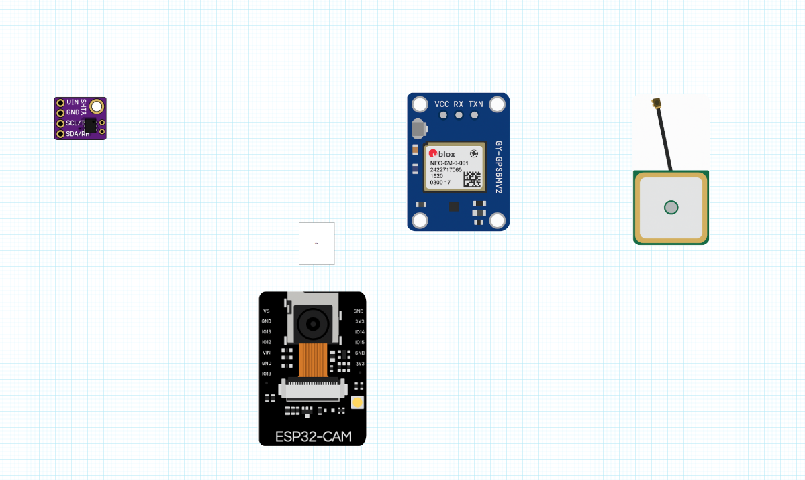

Nature Scanner is a weather-resistant, multi-sensor environmental sensing device developed as a proof-of-concept hardware platform
for drone perception and localization. This device has potential uses in environmental sensing for agricultural applications like scanning
microclimates or monitoring conditions inside storage facilities. I presented my project during Drone day 2025, an academic/industry
UAV workshop hosted by the University of Arizona Agricultural Department in Tucson Arizona.
This device collects temperature, humidity, RGB images and GPS coordinates and stores them locally on an SD card. This suite of environmental
and positional data is key for developing advanced drone perception and localization capabilities. The device consists of two submodules each
controlled by an ESP32-CAM microcontroller development board. Both boards run custom firmware that allows the chips to communicate with sensor
peripherals and can also send data wirelessly between boards. Sensor readings are managed by FreeRTOS,a real time operating system that allows
NS to collect data to be collected continuously and reliably.
The “Josie” module utilizes an OmniVision OV2640 CMOS camera to capture 2 Megapixel (1600 x 1200 UXGA) images set to one frame per second.
It was specifically designed to save these high-quality, uncompressed images directly onto the onboard micro SD card for later retrieval and analysis.
The “Adam” module uses a Sensirion SHT31 solid state temperature/humidity sensor alongside a HiLetgo GY-NEO6MV2 NEO-6M GPS. The NEO6 GPS receives
a satellite signal at L1 band 1575.42 MHz. GPRMC sentences are logged in a text file with UTC time, position status, lat, lon, speed (knots), date and more.
Temperature and relative humidity (at resolution of 0.01 °C/%RH) are also stored in the same text file with a timestamp.

| Category | Component | Specs / Notes |
|---|---|---|
| Microcontroller | ESP32-CAM module | ESP32-D0WDQ6-V3 (revision v3.1) chip |
| Sensor | OV2640 Camera Sensor | 2.0 MP Color CMOS UXGA |
| Ublox NEO-6M-0-001 | GPS module ❓ | |
| Power Supply | Lithium Polymer Battery | 3.7V nominal |
| Voltage Regulator | 3.7–9V input to 12V output | |
| Enclosure | ABS Plastic IP65 Junction Box | Dustproof / Waterproof |
| Serial Communication | HiLetgo FT232RL USB to TTL Converter | USB to UART (Serial) connection |